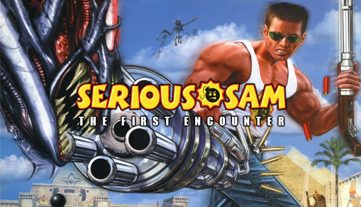
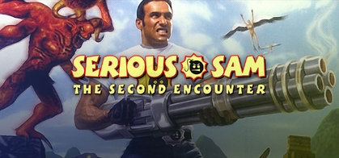
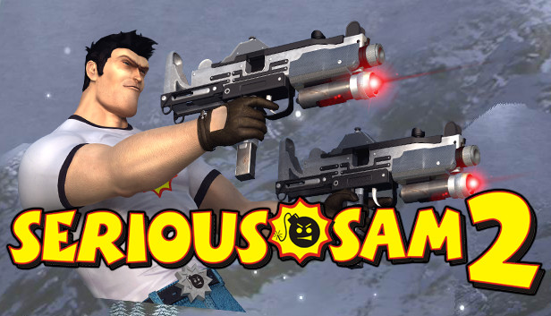
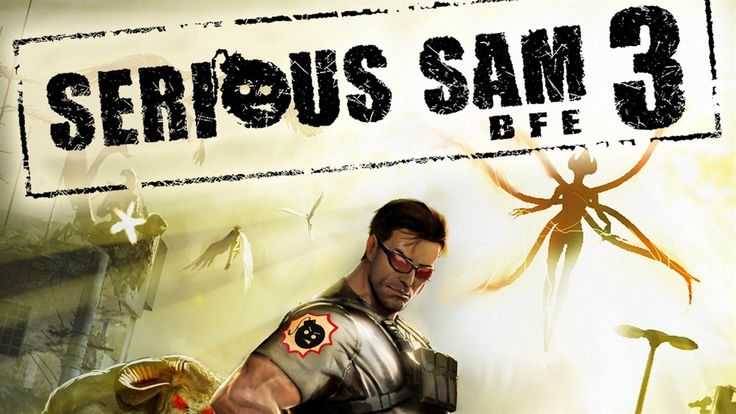
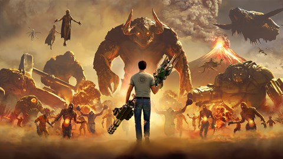

Série Serious Sam

Serious Sam é uma série de jogos para PC e consoles concorrente de Duke Nukem. Todos os títulos são shooters de primeira pessoa também possuindo a opção de jogo em terceira pessoa, com mares de inimigos na tela. Grande parte da ambientação se resume em arenas gigantescas onde as batalhas ocorrem, possuindo puzzles em alguns momentos e itens escondidos pelos cenários. Cada jogo possui um arsenal de armas que são adquiridas no decorrer de cada fase e os inimigos comuns são recorrentes nos títulos seguintes. Há 13 jogos na franquia, contando com spin offs e remakes, mas aqui vamos mencionar os títulos principais.
1. Serious Sam The First Encounter
O primeiro título da Série foi lançado em 2001, Serious Sam the First Encounter. No jogo o protagonista Sam "Serious" Stone é escolhido para utiliar um dispositivo de viagem no tempo, o Time-Lock, para enfrentar as forças do líder de uma raça alienígena sensitiva, Mental. O jogo se passa no antigo egito aonde Sam visita cidades e templos antigos. Lançado para Windows, Palm OS e Xbox, na versão HD para Windows, Xbox 360, Stadia, Nintendo Switch, PlayStation 4, Xbox One, e em VR para Linux e Windows.
2. Serious Sam The Second Encounter
No segundo título da Série, lançado em janeiro de 2002, a nave espacial onde Sam estava é atingida e cai na América Central, na época Maia. Então uma nova jornada em busca de outra nave se inicia, passando por três locais e épocas distintos. Lançado para Windows, e Xbox, na versão HD para Windows, Xbox 360, Stadia, Nintendo Switch, PlayStation 4, Xbox One, e em VR para Linux e Windows.
3. Serious Sam II
Neste título, Sam continua a sua jornada apartir de the second encounter, visitando outros planetas para aquirir partes de um medalhão que enfraqueceria Mental, e permitiria dar um fim ao vilão da série. Lançado para Windows e Xbox.
4. Serious Sam III: BFE
Aqui acompanhamos a história de Sam antes do primeiro encontro. No ano de 2060 as forças de Mental invadem o planeta levando a raça humana quase ao ponto de extinção. Os sobrevientes recorrem ao Time-Lock, um dispositivo recentemente escavado capaz de enviar uma pessoa através do tempo, em um período crucial para alterar os eventos ocorridos. Sam é escolhido para encontrar um meio de ativá-lo, uma vez que o dispoitivo se encontra adormecido. Lançado para Windows, Linux, Mac OS X, Xbox 360, Xbox One, PlayStation 3, PlayStation 4, Nintendo Switch e Stadia.
5. Serious Sam 4
Chegamos ao último título da série. Numa período de tempo desconhecido antes de BFE, um portal enorme se abre em Tunguska na Russia e serve como ponte para as forças de Mental invadirem a terra. Enquanto o planeta se esforça para repelir a invasão alienígena, uma equipe liderada por Sam "Serious" Stone é enviada para investigar o paradeiro do Santo Graal que acredita-se ser um artefato capaz de auxiliar contra a invasão. Lançado para Windows, Stadia, PlayStation 5 e Xbox Series X/S. O jogo conta com uma DLC, Siberian Mayhem, lançada para Windows, PlayStation 5 e Xbox Série X/S.